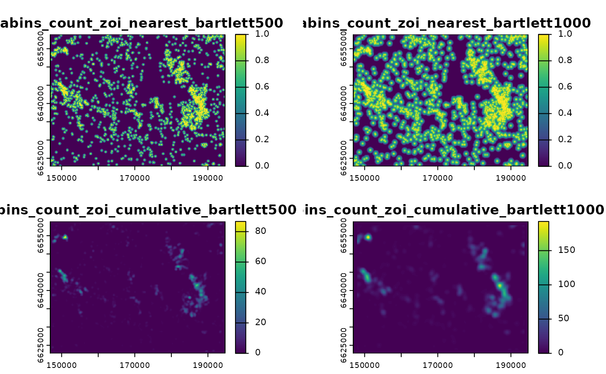

Computing zones of influence on GRASS GIS through the oneimpact package in R
Source:vignettes/zoi_on_grass.Rmd
zoi_on_grass.RmdThe computation of zones of influence (ZOI) in useful to assess
whether the effect of a given anthropogenic infrastructure, disturbance,
or landscape variable affect an ecological response variable beyond its
spatial delimitation. Computing zones of influence for large maps with
fine resolution though, is tricky because of computing and memory
limitations in processing raster maps in R. To deal with that, the
oneimpact package offers tools to compute the ZOI in GRASS GIS, a powerful, open-source ,
using the package rgrass to
link R and GRASS. Here we provide an example and some comments on how to
compute ZOI metrics in GRASS GIS via R.
For an introduction to the zone of influence approach in R, look at the Getting started and Computing zones of influence introdutory vignettes.
Overview
To compute ZOI metrics in GRASS GIS, we can use the same function
used to compute ZOI in R, calc_zoi() (or
calc_zoi_nearest() and calc_zoi_cumulative for
only the nearest and cumulative ZOI metrics), adding a parameter
where = "GRASS". However, the computation in GRASS GIS is
slighly different from doing the same in R. Here are some key
differences:
- raster processing is made in GRASS GIS, so it requires an active connection between the R session and a GRASS GIS location and mapset;
- the input raster maps representing infrastructure or disturbance
might be loaded into the GRASS GIS location/mapset R is connected to.
This might be done through the
rgrasspackage; - once the input raster maps are loaded in GRASS, the input to the
calc_zoi()function is not a raster object in R but a string with the name of the map in the GRASS mapset; - after processing, ZOI maps are saved within the GRASS GIS location
and mapset. To retrieve them, one must use the
rgrasspacakge to import the maps into R or outside to a working folder.
Below we show how to do these steps to compute the ZOI and provide a few comments.
Establishing a connection between R and GRASS
Downloading and installing GRASS GIS
The first requirement to compute ZOI metrics in GRASS is to have GRASS GIS installed. GRASS can be freely downloaded and installed in most operational systems (Windows, Linux, MacOS). For more information on installations, please see the official GRASS Downloads webpage. The website also provides helpful manuals, tutorials, and videos and various languages for first time and experienced users.
Connecting R to GRASS GIS
GRASS GIS has a slighly different project organization, if compared to other popular GIS software such as ArcGIS and QGIS. GRASS projects are called Locations, which are defined by a single geodetic datum and coordinate reference system (CRS). This means that all maps of all types (e.g. vector, raster) within a location have the very same CRS, what assures all data is processed correctly. Each location has a main folder called PERMANENT and might have multiple other folders; these folders are called Mapsets. See this tutorial for more information on the GRASS database and location structure.
Running GRASS from R
When connecting R to GRASS, R might be connected to a given GRASS
location and mapset through the function
rgrass::initGRASS(). One must provide to this call the
folder where the GRASS GIS executable files are found (parameter
gisBase), as well as the folder where the project is
located (parameter gisDbase), the location name (parameter
location) and the mapset name (parameter
mapset). The function might be used to connect to an
already existing location or create a new one, if it does not exist.
For illustration, here we create a new location to work on the
oneimpact examples. To do so, we use as a reference (for
defining the datum and CRS of the GRASS location) the map of number of
private tourist cabins in a sample area in Southern Norway, stored in
the oneimpact package (see
?sample_area_cabins_count.tif for more information). We
first load this data set.
# load packages
library(oneimpact)
library(rgrass) # for connecting R and GRASS
#> GRASS GIS interface loaded with GRASS version: sh: line 1: g.version: command not found
#> and location: ETRS_33N/
library(terra) # for geodata in R
#> terra 1.8.42
# load cabins raster data into R
(f <- system.file("raster/sample_area_cabins_count.tif", package = "oneimpact"))
#> [1] "/home/runner/work/_temp/Library/oneimpact/raster/sample_area_cabins_count.tif"
cabins_count <- terra::rast(f)Next, we need to know what is the path of the folder where GRASS GIS executable files are located. The following command works in Linux, MacOS, and within the OSGeo4W in Windows:
# For linux or within OSGeo4W shell
grassdir <- system("grass --config path", intern = TRUE)
grassdir
#> [1] "/usr/lib/grass83"Now we can create a GRASS GIS location and connect our R session to it:
gisDB <- "." # create location and mapset in the working directory
loc <- "test_location/" # name of the location
ms <- "PERMANENT" # name of the mapset
# create grass db and connect
rgrass::initGRASS(gisBase = grassdir,
SG = cabins_count, # use map to define location projection
home = tempdir(),
gisDbase = gisDB,
location = loc,
mapset = ms,
override = TRUE, )
#> gisdbase .
#> location test_location/
#> mapset PERMANENT
#> rows 361
#> columns 478
#> north 6658900
#> south 6622800
#> west 146900
#> east 194700
#> nsres 100
#> ewres 100
#> projection:
#> PROJCRS["unknown",
#> BASEGEOGCRS["grs80",
#> DATUM["European Terrestrial Reference System 1989",
#> ELLIPSOID["Geodetic_Reference_System_1980",6378137,298.257222101,
#> LENGTHUNIT["metre",1]],
#> ID["EPSG",6258]],
#> PRIMEM["Greenwich",0,
#> ANGLEUNIT["degree",0.0174532925199433,
#> ID["EPSG",9122]]]],
#> CONVERSION["Transverse Mercator",
#> METHOD["Transverse Mercator",
#> ID["EPSG",9807]],
#> PARAMETER["Latitude of natural origin",0,
#> ANGLEUNIT["degree",0.0174532925199433],
#> ID["EPSG",8801]],
#> PARAMETER["Longitude of natural origin",15,
#> ANGLEUNIT["degree",0.0174532925199433],
#> ID["EPSG",8802]],
#> PARAMETER["Scale factor at natural origin",0.9996,
#> SCALEUNIT["unity",1],
#> ID["EPSG",8805]],
#> PARAMETER["False easting",500000,
#> LENGTHUNIT["metre",1],
#> ID["EPSG",8806]],
#> PARAMETER["False northing",0,
#> LENGTHUNIT["metre",1],
#> ID["EPSG",8807]]],
#> CS[Cartesian,2],
#> AXIS["easting",east,
#> ORDER[1],
#> LENGTHUNIT["metre",1,
#> ID["EPSG",9001]]],
#> AXIS["northing",north,
#> ORDER[2],
#> LENGTHUNIT["metre",1,
#> ID["EPSG",9001]]]]Notice that, in the code above, a few additional parameters were
filled. First, the SG = cabins_count parameter defined the
map of cabins as the reference to define the CRS of the created
location. Second, we created a location in a temporary folder using
home = tempdir(). While this is ok for tests and
demonstration purposes like this tutorial, we do not recommend you to
use it when processing maps for other purposes, since the data might be
lost after the connection to GRASS is closed.
As a proof to check if the connection between R and GRASS is active,
the initGRASS() function shows a series of information
about the grass database and location. The same might be checked at any
time by using the rgrass::gmeta() function:
# check grass connection
rgrass::gmeta()This command shows all the information on the grass database,
location, mapset, and reference system. Besides, it provides information
about the GRASS working computational region (number of
rows and columns of the region;
north, south, west, and
east boundaries of the region extent; and region resolution
in the north-south and east-west directions, nsres and
ewres). Differently from other GIS, GRASS works based on
computational regions to perform map processing. This means that,
regardless of the extent and resolution of the input maps, it is
possible to set a specific desired extent and resolution as the output
for most of the GRASS GIS tools. More information on GRASS computational
regions can be found here.
Running R within GRASS
Another option is to open a GRASS GIS session and run R within the GRASS shell. Too know more about this option, please look at these GRASS GIS wiki.
Notes in GRASS installation and connections on Windows
It is possible to install GRASS on Windows operational systems in two ways, and it might be a little tricky to connect R and GRASS.
Standalone installation
The first option is to download a standalone
installer and install a given GRASS GIS version. If you do so, the
code above should work, except the command
system("grass78 --config path", intern = TRUE). In this
case, the grassdir object with the path to the executable
GRASS files should look like:
Installation through OSGeo4W
Another option on Windows is to use OSGeo4W. OSGeo4W is an installer for a broad set of open source geospatial software packages including GRASS GIS as well as many other packages (QGIS, GDAL/OGR, and more). Here it is possible to choose which version of GRASS GIS to install and choose many other installation setting besides the default.
When GRASS is installed through OSGeo4W, though, R must be opened
from the OSGeo4W shell for the connection between R and GRASS to work
through the rgrass package. See the documentation for the
rgrass::initGRASS() function and this issue for
more information on the connection between R and GRASS on Windows.
Computing the zones of influence
Loading input maps into GRASS
Before computing the ZOI metrics, the input infrastructure or
disturbance maps must be loaded into GRASS. If the maps are already open
in our R session, it is possible to write them into our GRASS mapset
using the rgrass::write_RAST() function:
# write raster into GRASS
rgrass::write_RAST(cabins_count,
vname = "cabins_count", # name of the map in GRASS
flags = c("o", "quiet", "overwrite"))In some cases, there might be small, negligible differences between
the GRASS location CRS and the the input map CRS. In such cases where
this difference might be ignored, the parameter flags = "o"
might be added to ignore the differences (look here
for more details on the -o flag). Likewise, if the map
already exists in the GRASS location and we want to overwrite it, we
must add the overwrite = TRUE parameter to the
function.
Another way of loading a map into a GRASS location and mapset
directly from a folder in your computer, without the need to pre-load it
into R, is to use the r.in.gdal
or r.import
GRASS tools through the rgrass::execGRASS() function. The
function execGRASS() provides a way of running GRASS
modules and addons directly, as if we were running them through the
GRASS console.
In this case, the following command would also work:
# get path to the raster file
f <- system.file("raster/sample_area_cabins_count.tif", package = "oneimpact")
f
# load this file to the GRASS mapset
rgrass::execGRASS("r.in.gdal", input = f,
output = "cabins_count", # name of the map in GRASS
flags = c("overwrite", "o"))Computing the ZOI
Now, computing the ZOI is very similar to the procedure in R with the
calc_zoi() function. We will here compute both the ZOI of
the nearest feature and the cumutive ZOI for cabins using a ZOI with a
linear decay (i.e. Bartlett) shape and radii of 500 and 1000 m.
Importantly, here the main input x for the
calc_zoi() funcion is a string with the name of the map
within the GRASS mapset (or a vector strings for multiple maps). To
inform R that we wish to make processing in GRASS, we must set
where = "GRASS":
# compute zoi
zoi_metrics <- calc_zoi(x = "cabins_count", # string as input
radius = c(500, 1000),
type = "bartlett",
zeroAsNA = TRUE,
where = "GRASS",
g_overwrite = TRUE)
#> 0% 2% 4% 6% 8% 10% 12% 14% 16% 18% 20% 22% 24% 26% 28% 30% 32% 34% 36% 38% 40% 42% 44% 46% 48% 50% 52% 54% 56% 58% 60% 62% 64% 66% 68% 70% 72% 74% 76% 78% 80% 82% 84% 86% 88% 90% 92% 94% 96% 98% 100%
#> Removing raster <cabins_count_zoi_nearest_euclidean>
#> Removing raster <temp_set_null_input>
# check the output
zoi_metrics
#> [1] "cabins_count_zoi_nearest_bartlett500"
#> [2] "cabins_count_zoi_nearest_bartlett1000"
#> [3] "cabins_count_zoi_cumulative_bartlett500"
#> [4] "cabins_count_zoi_cumulative_bartlett1000"Notice that, differently from when calc_zoi() is run
entirely in R, the output object zoi_metrics is a vector of
strings specifying the name of the output maps computed in GRASS. Below
we show how to retrieve these maps into R or export them from GRASS into
a local folder.
Notice also that the g_overwrite parameter was used to
guarantee that, if there are already maps with similar names in the
GRASS GIS mapset, they will be overwritten. Other parameters to control
how calc_zoi() is computed in GRASS are available, all
following starting with g_. For instance, the name of the
output map (or pattern in the output names, when there is more than one
map or ZOI radius) might be determined using the
g_output_map_name parameter. If no parameter is specified,
the input map name is used, together with the ZOI metric, shape, and
radius, to create the name of the output maps. For more information on
GRASS GIS options for ZOI computation, see the documentation for
calc_zoi_nearest() and
calc_zoi_cumulative().
Retrieving outputs from GRASS
Once the ZOI maps are calculated, we can retrieve them to R using the
function rgrass::read_RAST(). By default, this function
reads the rasters as a SpatialGridDataFrame object from the
sp package. Here we prefer to specify
return_format = "terra", in case which the output is a
terra SpatRaster object.
# retireve maps
cabins_zoi_cumulative <- rgrass::read_RAST(zoi_metrics,
return_format = "terra",
flags = "quiet")
cabins_zoi_cumulative
#> class : SpatRaster
#> dimensions : 361, 478, 4 (nrow, ncol, nlyr)
#> resolution : 100, 100 (x, y)
#> extent : 146900, 194700, 6622800, 6658900 (xmin, xmax, ymin, ymax)
#> coord. ref. : +proj=utm +zone=33 +ellps=GRS80 +units=m +no_defs
#> sources : file440111edb1ba.grd
#> file4401dd13fd.grd
#> file44015d7e80eb.grd
#> file440153f39bce.grd
#> color table : 1, 2, 3, 4
#> names : cabins_~lett500, cabins_~ett1000, cabins_~lett500, cabins_~ett1000
#> min values : 0, 0, 0.00000, 0.0000
#> max values : 1, 1, 86.69992, 192.6282Now we can plot the ZOI metrics computed in GRASS:
# plot ZOI metrics
terra::plot(cabins_zoi_cumulative)
From this point, the oneimpact vignette Getting
started shows how it is possible to annotate biological data with
the ZOI variables computed for different variables to prepare data for a
multi-scale analysis on the effects of infrastructure and anthropogenic
disturbance on biological responses (see also Niebuhr et al,
submitted).
Additional resources
Different algorithms to compute the cumulative zone of influence
In GRASS GIS, different algorithms might be used for the computation
of neighborhood analyses, which are the basis for the cumulative ZOI
calculation. The following GRASS tools are available to be used in
calc_zoi() in GRASS: r.resamp.filter,
r.mfilter, or r.neighbors. The module to be
used is controlled by the parameter g_module. Each of these
algorithms provide different capabilities and flexibility:
-
r.resamp.filterseems to be the fastest one in most cases, but has less flexibility in the choice of the zone of influence shapes. The algorithm calculates the weighted density of features, which might be rescaled to the cumulative ZOI if the appropriate scaling factor (calculated from the weight matrix) is provided. Currently only the filterstype = "bartlett"andtype = "box"are implemented inoneimpact. More information about the algorithm here. -
r.mfilter(the default tools in thecalc_zoi()functions) is slower thanr.resamp.filterbut much faster thanr.neighbors, and allows a flexible choice of the shape of the zone of influence (the wight matrix shape).r.mfilteris then the most indicated in terms of a balance between flexibility in the choice of the ZOI shape and computation efficiency. The only inconvenient ofr.mfilteris that it creates an edge effect with no information in the outer cells of a raster (the number of cells correspond toradiusor half the size of the weight matrix), so if it is used the users should add a buffer area around the input raster map, to avoid such edge effects. See for more details about this issue, and this link for more information on this tool. -
r.neighborsis considerably slower than the other algorithms (from 10 to 100 times), but allows a flexible choice of the ZOI shape. Contrary tor.resamp.filterandr.mfilter, which can only perform a sum of pixel values weighted by the input filter or ZOI,r.neighborsmight calculate many other statistical summaries within the window of analysis, such as mean, median, standard deviation etc. In principle, though, the sum is enough to compute the cumulative ZOI as formulated in Niebuhr et al. (submitted) and proposed here.
Different measures of distance to compute the zone of influence of the nearest feature
The metrics of ZOI of the nearest feature are based on maps of
distance form each pixel in the landscape to the nearest feature. They
are computed in GRASS through the r.grow.distance
tool. This tool allows the computation of the distance to the nearest
feature based on different distance metrics: “euclidean”, “geodesic”,
“squared”, “maximum”, “manhattan”. This allows extra flexibility and
might be controlled in the calc_zoi() functions through the
g_dist_metric parameter. If
g_dist_metric = "geodesic" and one uses the option
flags = "m", for instance, the computation of the distance
is made in meters even if the map is in geographical coordinate system
(Latitude-Longitude). Find more information at the GRASS GIS
documentation for this function here.
Additional ancillary functions
Additional examples for the computation of the ZOI in GRASS can be
found in the documentation of the calc_zoi_nearest() and
calc_zoi_cumulative() functions. The oneimpact
package also provides a few other ancillary functions to help processing
maps within GRASS:
- The function
grass_binarize()transforms continuous maps into binary maps based onbreaksto define discrete categories. The output consists of maps with 1 for values above thebreakand 0 for values below it. It might be used for preparing inputs to compute the ZOI based on continuous layers. - The function
grass_v2rast_count()rasterizes vectors within GRASS by counting the number of features in each pixel. This is usefull for large maps which are hard to be rasterized within R. See the Computing zones of influence vignette for a reasoning about where this might be useful.
References
Niebuhr, B. B., van Moorter, B., Stien, A., Tveraa, T., Strand, O., Langeland, K., Alam, M., Skarin, A., & Panzacchi, M. Estimating the cumulative impact and zone of influence of anthropogenic infrastructure on biodiversity. Methods in Ecology and Evolution, 14, 2362–2375. https://doi.org/10.1111/2041-210X.14133